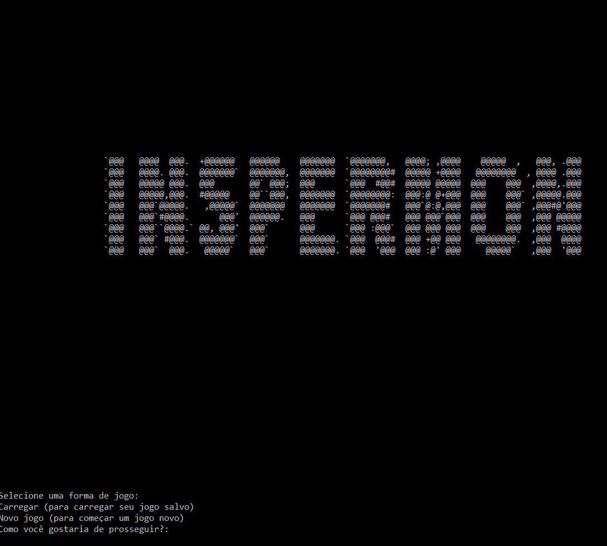

Co-Design de Aplicativos - Professor Miguel C.
Co-Design de Aplicativos, como o próprio nome da matéria diz, relaciona-se ao processo de programação com base em Design, buscando um melhor contato e uma melhor experiência com o usuário, ou seja, entregando um produto que satisfaz as necessidades do usuário. Esse será também o foco do projeto em questão: a montagem de um website na forma de portfólio dos projetos realizados pelos integrantes do grupo na faculdade.
A prática de desenvolvimento de websites vinculada ao planejamento e ao ciclo de design: idealizar, programar e validar o protótipo com usuários, visando obter feedback e iterar ainda mais o portfólio, tornando-o cada vez mais acessivo e direto para o leitor. Trabalhar conceitos como o CRAP (Contraste, Repetição, Alinhamento e Proximidade) e, a teoria das cores seria fundamental para o bom desenvolvimento do portfólio.
Em Breve
Voltar